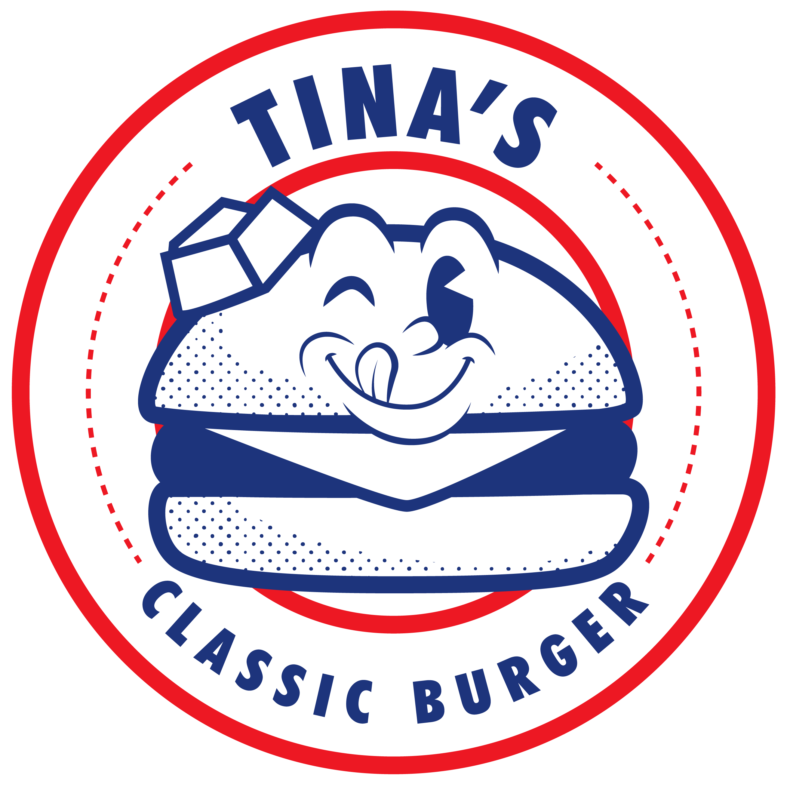

Sobre nós
Nascemos em 2020 na cidade de Tijucas/SC de um antigo desejo dos nossos sócios Mariana e Fernando. Fernando desde sempre gostou de cozinhar, mais do que cozinhar ele gostava de compartilhar, reunir os amigos e fazer uma boa carne na brasa. Mariana sempre teve o desejo de empreender, ser dona do seu próprio negócio e poder ter uma marca forte da qual pudesse se orgulhar.
Assim nasceu a Tina's Classic Burger, que recebeu seu nome em homenagem a Tina, uma labrador muito amada pelos seus donos e que, assim como eles, também amava comer.